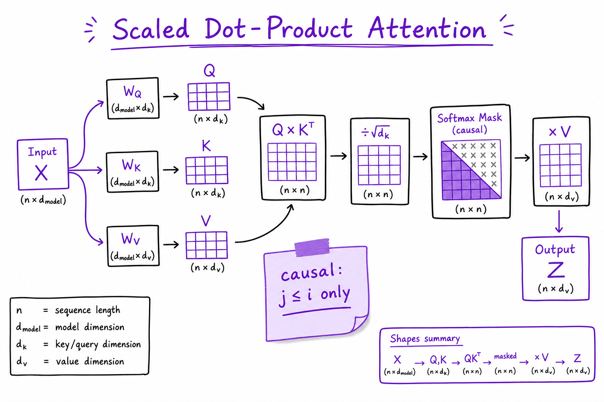

Transformers & attention // LLM fundamentals
Embeddings, attention, multi-head and GQA, RoPE, the block, a mini-GPT, FLOPs and FlashAttention.
01 — At a glance
Causal self-attention, multi-head projections, RoPE positional encoding, and the decoder-only stack that powers GPT, Llama, and Claude. The whiteboard mechanism interviewers expect before RAG or agents.

Decoder-only transformer: embeddings + positional encoding feed stacked blocks of causal self-attention and FFN; output logits drive autoregressive next-token prediction.

Scaled dot-product attention with every shape: project to Q, K, V, multiply Q by K-transpose, divide by the square root of d_k, apply the causal mask and softmax, multiply by V.
Quick reference
02 — What & Why
The transformer (Vaswani et al., 2017) replaced recurrence with self-attention: each token attends to others in parallel. Modern chat LLMs use decoder-only stacks with a causal mask so generation stays left-to-right.
Functional
- Map token sequence to next-token logits
- Capture long-range dependencies without RNN vanishing gradients
- Parallelize prefill across prompt tokens on GPU
Non-functional
- Attention cost O(n²) in sequence length n (naive)
- Memory scales with layers × heads × seq_len (KV cache)
See What an LLM is for the full training→inference story; this sheet is the mechanism.
03 — Core Concepts
| Term | Definition | Gotcha |
|---|---|---|
| Self-attention | Q,K,V from same sequence; weighted sum of values | Not cross-attention (encoder-decoder) |
| Scaled dot-product | softmax(QKT/√dk)V | Scaling prevents softmax saturation |
| Causal mask | Position i cannot attend to j > i | Required for autoregressive LM |
| Multi-head | h parallel attention subspaces, concat + project | d_model = h × d_head typically |
| RoPE | Rotary positional encoding in Q,K | Llama/Mistral default; better length extrapolation |
| FFN | Two linear layers with activation (SwiGLU) | ~2/3 of model parameters |
| FlashAttention | IO-aware fused attention kernels | Same math, less HBM traffic |
04 — API Surface (PyTorch / HuggingFace mental model)
import torch
import torch.nn.functional as F
def scaled_dot_product_attention(q, k, v, mask=None):
scores = torch.matmul(q, k.transpose(-2, -1)) / (q.size(-1) ** 0.5)
if mask is not None:
scores = scores.masked_fill(mask == 0, float("-inf"))
weights = F.softmax(scores, dim=-1)
return torch.matmul(weights, v)
# HF: model = AutoModelForCausalLM.from_pretrained("meta-llama/Llama-3-8B")
# outputs = model(input_ids, use_cache=True) # returns past_key_valuesProduction apps rarely implement attention directly — but interviews ask you to derive QKV and explain causal masking.
05 — When to Use / When NOT
| Architecture | Use When | Alternative |
|---|---|---|
| Decoder-only (GPT) | General chat, code, agents | Encoder-only for embeddings |
| Encoder-decoder (T5) | Fixed source→target (translation) | Decoder-only + prompt for chat |
| Encoder-only (BERT) | Classification, embeddings | Not for open-ended generation |
| Sparse attention | Very long context (>32K) | Full attention + KV optimizations |
06 — Architecture
Token IDs -> Embedding + PosEnc
-> [Block] x L:
x -> LN -> Multi-Head Causal Attention -> +residual
-> LN -> FFN (up -> act -> down) -> +residual
-> LN -> Linear(d_model, vocab) -> logits07 — Deep Dive: Self-Attention

Scaled dot-product self-attention with causal mask preventing future token peeking.
Each token produces Query, Key, Value via learned linear maps. Attention weights = softmax of dot products; output = weighted sum of Values. Causal mask sets future positions to −∞ before softmax.
08 — Deep Dive: Multi-Head Attention

Parallel attention heads capture syntactic, semantic, and positional relations; outputs concatenated and projected.
Heads specialize (some track syntax, some coreference). Split d_model into h heads of dimension d_head = d_model/h. Output = Concat(head1,…)WO.
09 — Deep Dive: Positional Encoding (RoPE)
RoPE rotates Q and K vectors by position-dependent angles. Relative position emerges in dot products; extrapolates better than absolute sinusoidal encodings. Used in Llama 3, Mistral, Qwen.
ALiBi (alternative): additive bias by distance — simpler extrapolation, less common in newest stacks.
10 — Deep Dive: FFN & Residual Connections
FFN: Linear(d → 4d) → GELU/SwiGLU → Linear(4d → d). Residual connections + LayerNorm (Pre-LN in modern stacks) stabilize deep training (32–80+ layers).
11 — Deep Dive: Complexity & Optimizations
- Naive attention: O(n²d) time, O(n²) memory for n tokens
- KV cache: O(n) memory per layer at decode; see Inference internals
- FlashAttention: tiled computation, recomputes in SRAM
- GQA/MQA: share K/V heads across Q heads — fewer KV bytes
The full explanation
12 — Transformer internals — attention, for real
LLM fundamentals gives the intuition ("attention lets tokens look at each other"). This topic is the actual mechanism — the one interviews and serving math (Inference & serving) depend on.
13 — Tokenization: BPE in one paragraph
Byte-pair encoding: start from characters/bytes, repeatedly merge the most frequent adjacent pair into a new token, stop at vocab size (~50–200K). Result: common words = 1 token, rare words = several sub-pieces. Consequences you'll feel: token counts ≠ word counts, non-English text costs more tokens, exact spelling/arithmetic are hard (the model sees pieces, not characters).
The algorithm is small enough to hold in your head — and worth implementing once, because every tokenizer surprise you'll ever debug (why "hello" and " hello" are different tokens, why numbers shatter into odd pieces) falls out of these few lines:
from collections import Counter def get_pair_counts(words): """words: {(t,o,k,e,n,s...): count}. Count adjacent symbol pairs, corpus-weighted.""" pairs = Counter() for word, freq in words.items(): for a, b in zip(word, word[1:]): pairs[(a, b)] += freq return pairs def merge_pair(words, pair): """Replace every occurrence of `pair` with one fused symbol.""" a, b = pair out = {} for word, freq in words.items(): w, i = [], 0 while i < len(word): if i < len(word) - 1 and word[i] == a and word[i + 1] == b: w.append(a + b); i += 2 # the merge: two symbols → one else: w.append(word[i]); i += 1 out[tuple(w)] = out.get(tuple(w), 0) + freq return out # toy corpus, pre-split into words with counts words = {tuple("lower"): 5, tuple("lowest"): 2, tuple("newer"): 6, tuple("wider"): 3} merges = [] for _ in range(10): # vocab budget = 10 merges pairs = get_pair_counts(words) if not pairs: break best = max(pairs, key=pairs.get) # most frequent adjacent pair words = merge_pair(words, best) merges.append(best) print(merges[:5]) # [('e','r'), ('l','o'), ('lo','w'), ...] — "er" wins first (11×) # Encoding new text = replaying this merge list in order. That ordered list # IS the tokenizer; GPT-2's shipped as exactly this, 50K merges long.
14 — Self-attention: the actual computation
From hidden states X, three learned projections:
Q = X·W_Q "what am I looking for?" (queries)
K = X·W_K "what do I offer?" (keys)
V = X·W_V "what information do I carry?" (values)
Attention(Q,K,V) = softmax( Q·Kᵀ / √d_k + M ) · V
• Q·Kᵀ = compatibility score of every token pair
• / √d_k = keeps scores from growing huge → softmax saturating → dead gradients
• M (mask) = −∞ on future positions, so a causal model can't peek ahead
• softmax = scores → weights that sum to 1
• ...·V = each token's new representation = weighted mix of everyone's values
Multi-head attention runs this h times in parallel subspaces (different learned relationships), then concatenates. Don't over-trust stories about "this head does syntax" — head roles are real but messier than the folklore.
And here it is as code you can step through. Every LLM you will ever serve contains, at its core, this module repeated N times; the shape comments are the part interviewers actually probe:
import math import torch import torch.nn as nn import torch.nn.functional as F class CausalSelfAttention(nn.Module): def __init__(self, d_model=768, n_heads=12, max_seq=1024): super().__init__() assert d_model % n_heads == 0 self.h, self.dk = n_heads, d_model // n_heads # 12 heads × 64 dims self.qkv = nn.Linear(d_model, 3 * d_model) # W_Q, W_K, W_V fused self.proj = nn.Linear(d_model, d_model) # W_O, mixes heads back mask = torch.tril(torch.ones(max_seq, max_seq)) # 1s on/below diagonal self.register_buffer("mask", mask.view(1, 1, max_seq, max_seq)) def forward(self, x): # x: [B, T, d_model] B, T, C = x.shape q, k, v = self.qkv(x).split(C, dim=2) # each [B, T, C] # split C into heads: [B, T, C] → [B, h, T, dk] q = q.view(B, T, self.h, self.dk).transpose(1, 2) k = k.view(B, T, self.h, self.dk).transpose(1, 2) v = v.view(B, T, self.h, self.dk).transpose(1, 2) att = (q @ k.transpose(-2, -1)) / math.sqrt(self.dk) # [B, h, T, T] ← the O(T²) att = att.masked_fill(self.mask[:, :, :T, :T] == 0, # future → −∞ float("-inf")) att = F.softmax(att, dim=-1) # rows sum to 1 y = att @ v # [B, h, T, dk] y = y.transpose(1, 2).contiguous().view(B, T, C) # concat heads → [B, T, C] return self.proj(y) # [B, T, d_model] x = torch.randn(2, 10, 768) out = CausalSelfAttention()(x) assert out.shape == x.shape # attention never changes shapes — # it re-mixes information across T # Production note: replace the softmax block with # F.scaled_dot_product_attention(q, k, v, is_causal=True) # → FlashAttention kernels, same math, no T×T matrix materialized.
Two things to notice in the code. First, the causal mask is why the KV cache works: token t's output depends only on tokens ≤ t, so during generation the K and V of past tokens never change — cache them and each new token costs one row of attention instead of recomputing the whole T×T matrix. Second, the att tensor is [B, heads, T, T] — at T=32K and 32 heads that's 32×32K×32K floats per sequence if you materialize it, which is why FlashAttention (computing the same softmax in tiles, never storing the full matrix) matters so much in practice (Inference & serving).
15 — The block, and the shapes
decoder block: x → norm → causal self-attention → +x (residual)
→ norm → feed-forward (per-token MLP) → +x (residual)
stack N blocks, then a final projection to vocabulary logits.
shapes: token ids [batch, seq]
hidden [batch, seq, d_model]
attn scores [batch, heads, seq, seq] ← the O(seq²) term
logits [batch, seq, vocab]
Attention mixes across positions; the feed-forward net transforms each position independently (and holds most of the parameters). Residuals + normalization are what make 100-layer stacks trainable. Position information is injected explicitly (learned, sinusoidal, or RoPE — rotary — in most modern models) because attention itself is order-blind: shuffle the input tokens and unmasked attention produces the same shuffled outputs. Something must tell the model that "dog bites man" ≠ "man bites dog."
RoPE intuition, since it's what nearly every modern open model uses: instead of adding a position vector to the embedding, RoPE rotates each query and key by an angle proportional to its absolute position — pairs of dimensions are treated as 2-D planes, and position m rotates them by m·θ (different θ per dimension pair, from fast-spinning to glacial). The payoff is in the dot product: rotating q by m·θ and k by n·θ makes q·k depend only on the difference m−n. Relative position falls out of the geometry for free — "how far apart are these tokens" is encoded, not "where are they on an absolute ruler." That's why RoPE generalizes better across positions, why it lives inside the attention computation rather than at the input, and why context extension tricks (Inference & serving) work by rescaling those rotation frequencies so pretrained angle patterns stretch over longer sequences.
| Position scheme | Mechanism | Trade-off |
|---|---|---|
| Learned absolute (GPT-2) | a trained embedding per position index, added to input | simple; hard ceiling at trained max length |
| Sinusoidal (original Transformer) | fixed sin/cos waves added to input | no learned params; extrapolates poorly in practice |
| RoPE (Llama, Qwen, Mistral…) | rotate Q,K by position-proportional angles | relative-position by construction; extendable via frequency rescaling |
| ALiBi | subtract distance-proportional bias from scores | cheap, decent length extrapolation; less expressive |
16 — Two numbers you should be able to estimate
params ≈ 12 × N_layers × d_model² (attention + FFN, rough decoder-only rule)
KV cache per sequence ≈ 2 × layers × tokens × kv_heads × head_dim × bytes
└ keys and values; this — not weights — often caps concurrency (Inference & serving)
Work the parameter count once for a concrete config — GPT-2-small: d_model=768, 12 layers, 12 heads, vocab 50,257. Per layer: attention has four d×d projections (Q, K, V, output) = 4 × 768² = 2,359,296; the FFN expands to 4·d and back, 768×3072 + 3072×768 = 4,718,592. Total 12 × 768² = 7,077,888 per layer — hence the rule's 12 (4 from attention + 8 from FFN). Times 12 layers: 84.9M. Add token embeddings 50,257 × 768 = 38.6M (tied with the output head, so counted once), plus small change for LayerNorms and biases: ≈124M — exactly GPT-2's advertised size. Two structural facts fall out of the arithmetic: the FFN holds ⅔ of the block parameters, and at small d_model the embedding table is a third of the whole model (at d_model=8192 it's a rounding error — vocab grows ~0×, d² grows 100×).
Now the KV cache, same model, one 2,048-token sequence at fp16: 2 (K and V) × 12 layers × 2,048 tokens × 768 (12 kv_heads × 64 head_dim) × 2 bytes = 75.5 MB. Harmless. Scale to a Llama-2-7B-shaped model (32 layers, 32 KV heads × 128 dims = 4,096) at a 4,096-token context: 2 × 32 × 4,096 × 4,096 × 2 = 2.1 GB per sequence. Forty concurrent users at that context want ~86 GB of cache — more than the 14 GB the weights themselves take at fp16. This is why grouped-query attention (fewer KV heads than query heads) exists: cut kv_heads from 32 to 8 and the cache drops 4× with minor quality loss. When Inference & serving talks about batching, paged KV cache, and GQA, this multiplication is the entire motivation.
17 — Mini-scenario: the "count the letters" bug report
A PM files a bug: "the model can't count the r's in strawberry, and it garbles our SKU codes like XR-2049-BLK." Both are tokenization, not intelligence. "strawberry" may be 1–3 tokens depending on the tokenizer — the model has literally never seen its letters, only piece IDs; asking it to count characters is asking someone to count letters in a word they've only heard spoken. The SKU shatters into ~6 arbitrary pieces (XR, -", "20, 49, …) whose boundaries shift if a space precedes it, so the model's "memory" of the code is a fragile piece-sequence. Fixes are engineering, not prompting heroics: for counting/spelling, have the model call a tool (Tools & agents); for IDs, keep them intact in structured fields the code handles, not free text the model must reproduce. You cannot prompt your way out of the tokenizer.
Internals gotchas that surface as product bugs
- Token counts differ per tokenizer. Budgeting context with one model's tokenizer while calling another can overflow by 20–30% — non-English and code by more. Count with the target model's tokenizer.
- Leading whitespace changes tokens.
"hello"and" hello"are different tokens; a prompt template that drops a space can shift logprobs and break few-shot formatting. - The mask is per-position, not per-request. In batched serving, one long sequence forces padding/attention bookkeeping for the whole batch — naive batching wastes compute on pad tokens (Inference & serving's continuous batching fixes this).
- Quadratic means asymmetric costs. Doubling context roughly 4×es attention compute at prefill; "just increase max_tokens" is cheap, "just increase context" is not.
- Numbers tokenize inconsistently (
2049one token,2,049three). Arithmetic reliability varies with formatting — normalize numbers before asking the model to reason over them.
Build it once
The highest-leverage exercise in this entire book: Karpathy's "Let's Build GPT" → implement BPE, causal attention, a block, and train a tiny model on Shakespeare. The two code listings in this topic are the heart of it — extendattention.py with the FFN, residuals, and norms and you have a block; stack 6 of them and you have a language model. After that, later topics (fine-tuning, KV cache, serving) is concrete instead of abstract. Reference: nanoGPT; deep path: Stanford CS336.Takeaways
- Attention = softmax(QKᵀ/√d_k)·V — compatibility-weighted information routing. The causal mask is what makes the KV cache legal.
- Attention mixes positions; the MLP transforms them (and holds ⅔ of block params); residuals make depth trainable; RoPE injects relative position by rotating Q and K.
- Params ≈ 12·L·d² — verified: it reproduces GPT-2's 124M. Being able to redo this arithmetic is a real interview and capacity-planning skill.
- Seq² attention cost + the KV cache are why long context is expensive (Inference & serving) — a 7B model's cache can outweigh its weights at moderate concurrency.
- Half of "model is dumb" bug reports are tokenization. Check the token boundaries before blaming the weights.
Exercises
- Run
bpe_mini.py, then extend it with anencode(text, merges)function that replays the merge list on a new word. Verify "lowest" encodes into fewer pieces after training than before. - In
attention.py, print the softmaxed attention matrix for a 5-token input and confirm: each row sums to 1, and everything above the diagonal is exactly 0. Then remove the mask and show future positions receiving weight. - Redo the parameter arithmetic for a model with d_model=4096 and 32 layers. Compare your 12·L·d² estimate against Llama-2-7B's actual count and explain the residual gap (embeddings, GQA, FFN multiplier ≠ 4).
- Compute KV-cache-per-sequence for that same config at 8K context in fp16, then recompute with 8 KV heads instead of 32 (GQA). How many concurrent sequences fit in 80 GB alongside 14 GB of weights, in each case?
- Take three tokenizers (e.g. GPT-2, a Llama variant, and any multilingual one via Hugging Face
AutoTokenizer) and tokenize the same English sentence, its translation into another language, and a UUID. Tabulate token counts and write two sentences on the cost implications.
18 — Embeddings
An embedding table is a V × d matrix; token id i looks up row i. These vectors are learned so that tokens used in similar contexts end up nearby (the distributional hypothesis: "you shall know a word by the company it keeps").
word2vec showed directions carry meaning: vec(king) − vec(man) + vec(woman) ≈ vec(queen). In a transformer the embedding is only the starting point; each layer refines it with context, so "bank" ends up different in "river bank" and "bank loan".
The final layer (LM head) projects d back to V logits; many models tie it to the embedding matrix to save parameters.
19 — Scaled dot-product attention
Each token emits three vectors from learned projections: a query (what I'm looking for), a key (what I offer to be found by), a value (what I pass along). Each token's output is a weighted average of all values, with weights from query–key similarity.
Q = X W_q, K = X W_k, V = X W_v X: (T, d) A = softmax( Q Kᵀ / √d_k + M ) (T, T) attention weights out = A V (T, d_v) M = 0 on/below diagonal, −∞ above # causal mask
- Why √d_k: q·k sums d_k products of unit-variance terms → variance d_k (The math you need). Large logits push softmax to one-hot, where gradients vanish. Dividing keeps variance ≈ 1.
- Why the mask: token t must not see the future it's predicting. With the mask, all T positions train in parallel in one pass.
- Cost: QKᵀ is T × T → O(T²·d) compute and O(T²) memory per head.
Mental model: a soft, differentiable dictionary lookup. Keys are addresses, values are contents, the query does fuzzy matching.
20 — Multi-head attention, MQA and GQA
Split d into h heads of size d/h; each head runs attention in its own subspace, then outputs are concatenated and mixed by W_o. Different heads learn different relations (previous token, syntax, coreference, induction/copying patterns). Same total FLOPs as one wide head.
MHA: h query heads, h KV heads MQA: h query heads, 1 KV head → KV cache ÷ h GQA: h query heads, g KV heads (g | h) → KV cache ÷ (h/g) e.g. Llama-3-8B: 32 Q, 8 KV
GQA keeps nearly MHA quality while cutting KV cache memory and bandwidth, which is what limits serving throughput.
21 — Positional encoding and RoPE
Attention treats inputs as a set: permute tokens and the outputs permute identically. Order must be injected.
- Sinusoidal (original transformer): add fixed sin/cos waves of many frequencies.
- Learned absolute (GPT-2): a trainable vector per position; can't extend past trained length.
- RoPE (Llama, Qwen, Mistral): rotate each 2-D pair of q and k dimensions by an angle m·θᵢ for position m. Then q_m·k_n depends only on (m − n): relative position, for free, inside the dot product.
- ALiBi: add a distance-proportional penalty to attention scores.
Long-context extension (8k → 128k) works by rescaling RoPE frequencies (position interpolation, NTK-aware scaling, YaRN) and briefly training on long sequences.
22 — The transformer block
x = x + Attention( RMSNorm(x) ) x = x + FFN( RMSNorm(x) ) # pre-norm residual block, × L layers FFN (classic): W₂ · GELU(W₁ x) d → 4d → d FFN (SwiGLU): W₂ · ( SiLU(W₁x) ⊙ W₃x ) d → ~8d/3 → d (3 matrices, same params)
Division of labor: attention moves information between tokens; the FFN transforms each token independently and stores much of the model's factual knowledge (it acts like a key–value memory). Pre-norm (normalize before each sublayer) trains more stably than the original post-norm.
23 — A complete mini-GPT in PyTorch
class Block(nn.Module): def __init__(s, d, h): super().__init__() s.h, s.n1, s.n2 = h, nn.LayerNorm(d), nn.LayerNorm(d) s.qkv, s.proj = nn.Linear(d, 3*d), nn.Linear(d, d) s.ff = nn.Sequential(nn.Linear(d, 4*d), nn.GELU(), nn.Linear(4*d, d)) def forward(s, x): # (B, T, d) B, T, d = x.shape q, k, v = s.qkv(s.n1(x)).split(d, dim=-1) q, k, v = (t.view(B, T, s.h, d // s.h).transpose(1, 2) for t in (q, k, v)) a = F.scaled_dot_product_attention(q, k, v, is_causal=True) # flash kernel x = x + s.proj(a.transpose(1, 2).reshape(B, T, d)) return x + s.ff(s.n2(x)) class GPT(nn.Module): def __init__(s, V, d=384, h=6, L=6, T=256): super().__init__() s.tok, s.pos = nn.Embedding(V, d), nn.Embedding(T, d) s.blocks = nn.Sequential(*[Block(d, h) for _ in range(L)]) s.norm, s.head = nn.LayerNorm(d), nn.Linear(d, V, bias=False) s.head.weight = s.tok.weight # weight tying def forward(s, idx, targets=None): # idx: (B, T) x = s.tok(idx) + s.pos(torch.arange(idx.size(1), device=idx.device)) logits = s.head(s.norm(s.blocks(x))) # (B, T, V) if targets is None: return logits return logits, F.cross_entropy(logits.view(-1, logits.size(-1)), targets.view(-1)) # targets = idx shifted left by one: x = data[i:i+T], y = data[i+1:i+T+1]
Train it on Tiny Shakespeare with the PyTorch in practice loop. If you can write this from memory and explain every line, you understand transformers.
24 — Counting parameters and FLOPs
per layer: attention 4d² (Q, K, V, O) + FFN 8d² (d→4d→d) = 12d² total ≈ 12 · L · d² + V · d (embeddings) GPT-2 small (L=12, d=768, V=50257): 85M + 39M ≈ 124M ✓ training FLOPs ≈ 6 · N · D (N params, D tokens) inference FLOPs ≈ 2 · N per generated token
Worked: a 7B model trained on 2T tokens ≈ 6 · 7e9 · 2e12 = 8.4e22 FLOPs. At 40% utilization of an H100 (~400 TFLOP/s effective) that's ~2.1e8 GPU-seconds ≈ 58,000 GPU-hours.
25 — FlashAttention
Naive attention writes the T × T score matrix to slow HBM, reads it back for softmax, writes again, reads again for × V. At long T that memory traffic dominates.
FlashAttention tiles Q, K, V into blocks that fit in on-chip SRAM, computes scores block by block, and uses an online softmax (keep a running max and running sum, rescale partial outputs when the max changes) so the full matrix never exists. Result is exact attention with O(T) memory and 2–4× speed. In PyTorch: F.scaled_dot_product_attention picks a flash kernel automatically.
In production
26 — Production & Ops
- Serving uses fused kernels (FlashAttention-2, cuDNN)
- Tensor parallel splits heads/layers across GPUs
- Monitor KV cache memory per request in Serving & scaling
- Quantization (INT4) shrinks weight memory, not attention FLOPs
28 — Common Pitfalls
- Confusing encoder-only BERT with generative decoder-only
- Ignoring causal mask in hand-rolled attention bugs
- Assuming O(n) attention without sparse methods or cache
- Forgetting FFN dominates parameter count
- Mixing absolute vs RoPE when extrapolating context